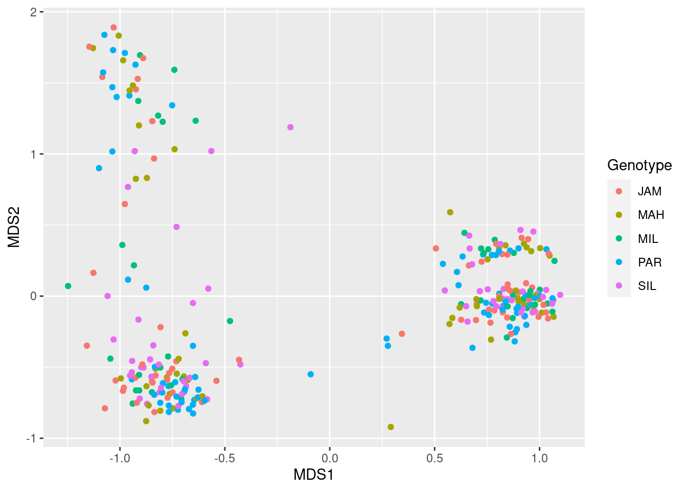
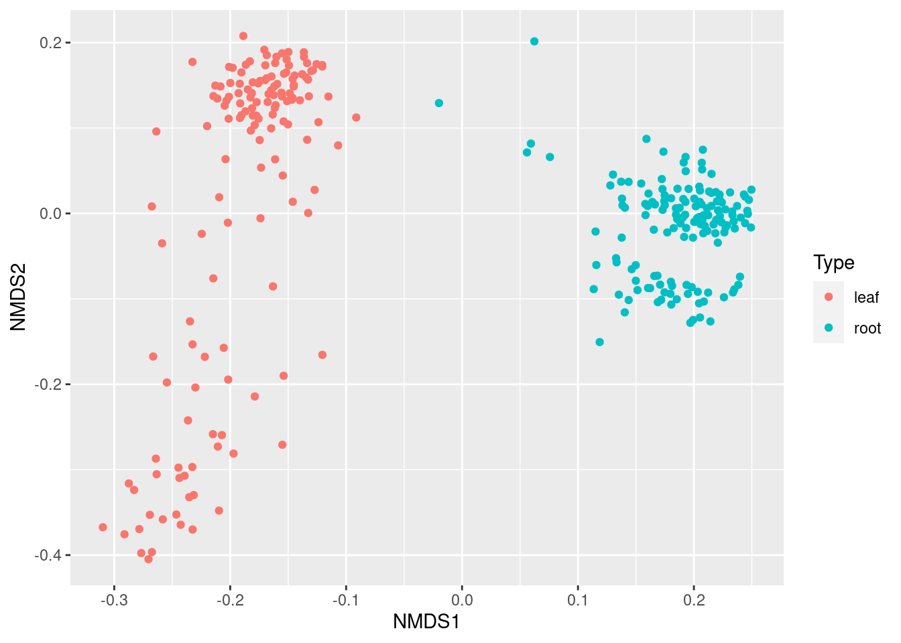
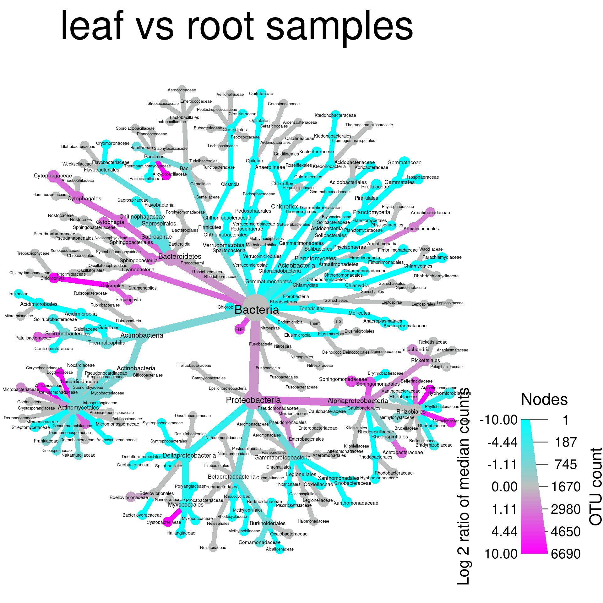

Diversity statistics
Load example data
If you are starting the workshop at this section, or had problems
running code in a previous section, use the following to load the data
used in this section. You can download the “clean_data.Rdata” file
here. If
obj and sample_data are already in your
environment, you can ignore this and proceed.
load("clean_data.Rdata")Measures of diversity
Diversity in the ecological sense is intuitively understood as the complexity of a community of organisms. There are many ways to quantify this complexity so that we can compare communities objectively. The two main categories of methods are known as alpha diversity and beta diversity (Whittaker 1960). Alpha diversity measures the diversity within a single sample and is generally based on the number and relative abundance of taxa at some rank (e.g. species or OTUs). Beta diversity also uses the number of relative abundance of taxa at some rank, but measures variation between samples. In other words, an alpha diversity statistic describes a single sample and a beta diversity statistic describes how two samples compare.
The vegan package is the main tool set used for
calculating biological diversity statistics in R.
Alpha (within sample) diversity
Common alpha diversity statistics include:
- Shannon: How difficult it is to predict the identity of a randomly chosen individual.
- Simpson: The probability that two randomly chosen individuals are the same species.
- Inverse Simpson: This is a bit confusing to think about. Assuming a theoretical community where all species were equally abundant, this would be the number of species needed to have the same Simpson index value for the community being analyzed.
There are also some diversity indexes that take into account the taxonomic similarity of the species called “taxonomic diversity” and “taxonomic distinctness”, but we will not go into those.
The diversity function from the vegan
package can be used to calculate the alpha diversity of a set of
samples. Like other vegan functions, it assumes that samples are in
rows, but they are in columns in our data, so we need to use the
MARGIN = 2 option. We also need to exclude the taxon ID
column by subsetting the columns to only samples (i.e. all column
besides the first one). Since alpha diversity is a per-sample attribute,
we can just add this as a column to the sample data table:
library(vegan)
sample_data$alpha <- diversity(obj$data$otu_rarefied[, sample_data$SampleID],
MARGIN = 2,
index = "invsimpson")
hist(sample_data$alpha)Adding this as a column to the sample data table makes it easy to
graph using ggplot2.
library(ggplot2)
ggplot(sample_data, aes(x = Site, y = alpha)) +
geom_boxplot()We can use analysis of variance (ANOVA) to tell if at least one of the diversity means is different from the rest.
anova_result <- aov(alpha ~ Site, sample_data)
summary(anova_result)## Df Sum Sq Mean Sq F value Pr(>F)
## Site 2 80244 40122 14.69 8.42e-07 ***
## Residuals 289 789514 2732
## ---
## Signif. codes: 0 '***' 0.001 '**' 0.01 '*' 0.05 '.' 0.1 ' ' 1
That tells us that there is a difference, but does not tell us which
means are different. A
Tukey’s
Honest Significant Difference (HSD) test can do pairwise
comparisons of the means to find this out. We will use the
HSD.test function from the agricolae package
since it provides grouping codes that are useful for graphing.
library(agricolae)## Registered S3 methods overwritten by 'klaR':
## method from
## predict.rda vegan
## print.rda vegan
## plot.rda vegantukey_result <- HSD.test(anova_result, "Site", group = TRUE)
print(tukey_result)## $statistics
## MSerror Df Mean CV
## 2731.882 289 57.43052 91.00981
##
## $parameters
## test name.t ntr StudentizedRange alpha
## Tukey Site 3 3.33168 0.05
##
## $means
## alpha std r Min Max Q25 Q50 Q75
## Jam 32.73475 31.23777 84 1.253188 95.52755 1.745386 33.65329 59.12646
## Mah 61.07740 48.69535 104 2.045294 154.05178 12.714725 56.75261 108.81348
## Sil 73.73023 67.13884 104 3.681719 240.22633 11.549273 34.04309 140.44495
##
## $comparison
## NULL
##
## $groups
## alpha groups
## Sil 73.73023 a
## Mah 61.07740 a
## Jam 32.73475 b
##
## attr(,"class")
## [1] "group"
Looking at the tukey_result$groups table it appears that
the alpha diversity of sites “Sil” and “Mah” might not be different, but
there is evidence that the diversity in site “Jam” is lower. We can add
this information to the graph using the
tukey_result$groups$groups codes:
group_data <- tukey_result$groups[order(rownames(tukey_result$groups)),]
ggplot(sample_data, aes(x = Site, y = alpha)) +
geom_text(data = data.frame(),
aes(x = rownames(group_data), y = max(sample_data$alpha) + 1, label = group_data$groups),
col = 'black',
size = 10) +
geom_boxplot() +
ggtitle("Alpha diversity") +
xlab("Site") +
ylab("Alpha diversity index")
So that takes care of comparing the alpha diversity of sites, but there are other interesting groupings we can compare, such as the genotype and the type of the sample (roots vs leaves). We could do the above all over with minor modifications, but one of the benefits of using a programming language is that you can create your own functions to automate repeated tasks. We can generalize what we did above and put it in a function like so:
compare_alpha <- function(sample_data, grouping_var) {
# Calcuate alpha diversity
sample_data$alpha <- diversity(obj$data$otu_rarefied[, sample_data$SampleID],
MARGIN = 2,
index = "invsimpson")
# Do ANOVA
sample_data$grouping <- sample_data[[grouping_var]] # needed for how `aov` works
anova_result <- aov(alpha ~ grouping, sample_data)
# Do Tukey's HSD test
tukey_result <- HSD.test(anova_result, "grouping", group = TRUE)
# Plot result
group_data <- tukey_result$groups[order(rownames(tukey_result$groups)),]
my_plot <- ggplot(sample_data, aes(x = grouping, y = alpha)) +
geom_text(data = data.frame(),
aes(x = rownames(group_data),
y = max(sample_data$alpha) + 1,
label = group_data$groups),
col = 'black',
size = 10) +
geom_boxplot() +
ggtitle("Alpha diversity") +
xlab(grouping_var) +
ylab("Alpha diversity index")
# Return plot
return(my_plot)
}Using this function, we can compare plot the alpha diversities by type of sample and genotype:
compare_alpha(sample_data, "Type")compare_alpha(sample_data, "Genotype")
Looks like there is no difference in the alpha diversity between genotypes, but a large difference between the diversity of roots and leaves.
The phyloseq package (McMurdie
and Holmes (2013)) can be used to quickly plot a variety of alpha
diversity indexes per sample using the plot_richness
function. First we need to convert the taxmap object to a
phyloseq object, since all of the phyloseq
functions expect phyloseq objects.
library(phyloseq)
library(metacoder)
ps_obj <- as_phyloseq(obj,
otu_table = "otu_rarefied",
otu_id_col = "OTU_ID",
sample_data = sample_data,
sample_id_col = "SampleID")
plot_richness(ps_obj, color = "Type", x = "Site")Each dot is a sample and the error bars in some of the indexes are the standard error.
Plotting taxon abundance with heat trees
Alpha diversity statistics capture the diversity of whole samples in
a single number, but to see the abundance of each taxon in a group of
samples (e.g., root samples), we need to use other techniques. Stacked
barcharts are typically used for this purpose, but we will be using heat
trees. First, we need to calculate the abundance of each taxon for a set
of samples from our OTU abundance information. We can use the
calc_taxon_abund function to do this, and then find the
mean abundance using a sample characteristic:
obj$data$tax_abund <- calc_taxon_abund(obj, "otu_props")## No `cols` specified, so using all numeric columns:
## M1981P563, M1977P1709, M1980P502, M1981P606 ... M1955P747, M1978P342, M1955P778## Summing per-taxon counts from 292 columns for 489 taxaobj$data$type_abund <- calc_group_mean(obj, "tax_abund",
cols = sample_data$SampleID,
groups = sample_data$Type)
print(obj$data$type_abund)## # A tibble: 489 × 3
## taxon_id leaf root
## <chr> <dbl> <dbl>
## 1 aad 1 1
## 2 aaf 0.647 0.456
## 3 aag 0.103 0.277
## 4 aah 0.0704 0.0155
## 5 aai 0.161 0.109
## 6 aaj 0.00438 0.00437
## 7 aak 0.00134 0.0266
## 8 aal 0.00109 0.0318
## 9 aam 0.000665 0.0135
## 10 aan 0.00571 0.0462
## # … with 479 more rows
Now we can use these per-taxon abundances to make heat trees of the primary taxa present in leafs and roots:
set.seed(2)
obj %>%
metacoder::filter_taxa(leaf > 0.001) %>% # metacoder:: needed because of phyloseq::filter_taxa
heat_tree(node_label = taxon_names,
node_size = leaf,
node_color = leaf,
layout = "da", initial_layout = "re",
title = "Taxa in leafs")
set.seed(3)
obj %>%
metacoder::filter_taxa(root > 0.001) %>% # metacoder:: needed because of phyloseq::filter_taxa
heat_tree(node_label = taxon_names,
node_size = root,
node_color = root,
layout = "da", initial_layout = "re",
title = "Taxa in roots")
Note that we needed to qualify filter_taxa with
metacoder::. This is because phyloseq is
loaded and it also has a function called filter_taxa. When
two functions from different packages have the same name, the function
from the package that was loaded last is called, unless
package_name:: is added.
Beta (between sample) diversity
Beta diversity is a way to quantify the difference between two communities. There are many metrics that are used for this, but we will only mention a few of the more popular ones. A few also incorporate phylogenetic relatedness and require a phylogenetic tree of the organisms in either community to be calculated.
Examples of indexes used with presence/absence data:
- Sørensen: two times the number of species common to both communities divided by the sum of the number of species in each community.
- Jaccard: the number of species common to both communities divided by the number of species in either community.
- Unifrac: The fraction of the phylogenetic tree branch lengths shared by the two communities.
Examples of indexes used with count data:
- Bray–Curtis: The sum of lesser counts for species present in both communities divided by the sum of all counts in both communities. This can be thought of as a quantitative version of the Sørensen index.
- Weighted Unifrac: The fraction of the phylogenetic tree branch lengths shared by the two communities, weighted by the counts of organisms, so more abundant organisms have a greater influence.
The vegan function vegdist is used to
calculate the pairwise beta diversity indexes for a set of samples.
Since this is a pairwise comparison, the output is a triangular matrix.
In R, a matrix is like a data.frame, but all
of the same type (e.g. all numeric), and has some different
behavior.
beta_dist <- vegdist(t(obj$data$otu_rarefied[, sample_data$SampleID]),
index = "bray")Since vegdist does not have a MARGIN option
like diversity, we need to
transpose
the matrix with the t function.
Ordination
The typical way beta diversity is plotted is using ordination. Ordination is a way to display “high dimensional” data in a visible number of dimensions (2 to 3). Our data is “high dimensional” because we have many samples with many OTUs and the abundance of each OTU can be considered a “dimension”. If we had only two species, we could make a scatter plot of their abundance in each sample and get an idea of how the samples differ. With thousands of species, this is not possible. Instead, ordination is used to try to capture the information in many dimensions by in a smaller number of new “artificial” dimensions.
mds <- metaMDS(beta_dist)## Run 0 stress 0.1131749
## Run 1 stress 0.1144213
## Run 2 stress 0.1165573
## Run 3 stress 0.1149066
## Run 4 stress 0.117722
## Run 5 stress 0.1171036
## Run 6 stress 0.1212251
## Run 7 stress 0.115744
## Run 8 stress 0.1162666
## Run 9 stress 0.1156565
## Run 10 stress 0.1135996
## ... Procrustes: rmse 0.005077196 max resid 0.06732746
## Run 11 stress 0.2062582
## Run 12 stress 0.1143721
## Run 13 stress 0.1135763
## ... Procrustes: rmse 0.001682281 max resid 0.02776895
## Run 14 stress 0.1571165
## Run 15 stress 0.1149534
## Run 16 stress 0.1135996
## ... Procrustes: rmse 0.005077156 max resid 0.06732874
## Run 17 stress 0.1138303
## Run 18 stress 0.1163325
## Run 19 stress 0.1138398
## Run 20 stress 0.1136046
## ... Procrustes: rmse 0.00307149 max resid 0.03814144
## *** Best solution was not repeated -- monoMDS stopping criteria:
## 9: stress ratio > sratmax
## 11: scale factor of the gradient < sfgrmin
That transformed our beta diversity matrix into a set of coordinates
in two dimensions, which are intended to capture the differences in the
data. However, it is in a format specific to vegan, so we
will have to convert the data to a form that we can use for
plotting.
mds_data <- as.data.frame(mds$points)To use the sample data in the plotting, we can combine the coordinate data with the sample data table:
mds_data$SampleID <- rownames(mds_data)
mds_data <- dplyr::left_join(mds_data, sample_data)## [1m[22mJoining, by = "SampleID"Now that we have the data in a format ggplot2 likes, we can plot it. Lets plot our two new dimensions and color them by sample type (i.e. leaves vs roots).
library(ggplot2)
ggplot(mds_data, aes(x = MDS1, y = MDS2, color = Type)) +
geom_point()
This shows that leaf and root samples are quite distinct, as we would expect. We can also color them by Site:
ggplot(mds_data, aes(x = MDS1, y = MDS2, color = Site)) +
geom_point()
It appears that within the leaf and root clusters, we “sub-clusters” corresponding to site. Finally, lets look at genotype:
ggplot(mds_data, aes(x = MDS1, y = MDS2, color = Genotype)) +
geom_point()
There is no discernible pattern there, suggesting plant genotype does not correspond to community structure.
We can also do the above quickly in phyloseq using the
ordinate and plot_ordination functions. Lets
look at the differences between leaf and root samples again, but using a
difference index this time.
ps_ord <- ordinate(ps_obj, method = "NMDS", distance = "jsd")## Run 0 stress 0.1069808
## Run 1 stress 0.1106674
## Run 2 stress 0.2097035
## Run 3 stress 0.1093052
## Run 4 stress 0.1069807
## ... New best solution
## ... Procrustes: rmse 6.690557e-05 max resid 0.0006479441
## ... Similar to previous best
## Run 5 stress 0.107159
## ... Procrustes: rmse 0.004396367 max resid 0.07444733
## Run 6 stress 0.1097307
## Run 7 stress 0.1073264
## ... Procrustes: rmse 0.004710866 max resid 0.07425749
## Run 8 stress 0.1081149
## Run 9 stress 0.1110496
## Run 10 stress 0.1105936
## Run 11 stress 0.1182278
## Run 12 stress 0.1071952
## ... Procrustes: rmse 0.001567977 max resid 0.02616063
## Run 13 stress 0.1077171
## Run 14 stress 0.1073263
## ... Procrustes: rmse 0.004709749 max resid 0.07425838
## Run 15 stress 0.1080435
## Run 16 stress 0.1100731
## Run 17 stress 0.1085896
## Run 18 stress 0.1085896
## Run 19 stress 0.107722
## Run 20 stress 0.1073261
## ... Procrustes: rmse 0.004707416 max resid 0.0742609
## *** Best solution repeated 1 times
plot_ordination(ps_obj, ps_ord, type = "samples", color = "Type")
Differential heat trees
Beta diversity summarizes the difference between two samples in a single number, but does not tell you why the samples are different. We developed a plotting technique we call “differential heat trees” to display differences in abundance of each taxon in two samples or groups of samples. These are like the heat trees shown in the plotting section, but colored with a diverging color scale the indicates which sample each taxon is more abundant in and by how much. In this way, it is similar to heat maps used for the same purpose in gene expression studies.
Comparing taxon abundance in two groups
Before we can make a differential heat tree, we need to calculate the
difference in abundance for each taxon between groups of samples, such
as root vs leaf samples. There are many ways this can be done, ranging
from simple differences in mean read counts, to outputs from specialized
programs designed for microbiome data. We will be using a function in
metacoder called compare_groups to do the
comparisons. We can use the per-taxon read propotions we got with
calc_taxon_abund eariler for this. For each taxon, at every
rank, the compare_groups function compares two groups of
counts. We have to define which sample belongs to which groups using
groups option:
obj$data$diff_table <- compare_groups(obj, data = "tax_abund",
cols = sample_data$SampleID,
groups = sample_data$Type)
print(obj$data$diff_table)## # A tibble: 489 × 7
## taxon_id treatment_1 treatment_2 log2_median_ratio median_diff mean_diff wilcox_p_value
## <chr> <chr> <chr> <dbl> <dbl> <dbl> <dbl>
## 1 aad leaf root 0 0 0 3.21e- 1
## 2 aaf leaf root 0.420 0.159 0.191 1.66e-17
## 3 aag leaf root -1.18 -0.137 -0.174 4.06e-43
## 4 aah leaf root 1.83 0.0225 0.0549 8.87e-18
## 5 aai leaf root 0.448 0.0385 0.0519 1.94e- 2
## 6 aaj leaf root -1.27 -0.00194 0.0000115 3.32e- 9
## 7 aak leaf root -6.72 -0.0249 -0.0252 1.62e-48
## 8 aal leaf root -Inf -0.0293 -0.0307 8.43e-51
## 9 aam leaf root -Inf -0.0129 -0.0128 2.63e-50
## 10 aan leaf root -4.66 -0.0423 -0.0405 1.61e-44
## # … with 479 more rows
By default, Wilcoxon Rank Sum test is used to test for statistical significance of differences and various summary statistics are reported to measure the size of the difference. Since we have done many independent tests (one for each taxon), we need to correct for multiple comparisions. We will do that with a false discovery rate (FDR) correction, but other types can be used as well.
obj <- mutate_obs(obj, "diff_table",
wilcox_p_value = p.adjust(wilcox_p_value, method = "fdr"))The most useful statistic for plotting is the log of ratio of median abundances in the two groups, since it is centered on 0 and is symmetric (e.g., a value of -4 is the same magnitude as 4). Lets set any differences that are not significant to 0 so all differences shown on the plot are significant.
obj$data$diff_table$log2_median_ratio[obj$data$diff_table$wilcox_p_value > 0.05] <- 0Now we have all the info needed to make a differential heat tree. The
standard heat_tree function can be used, but a few things
need to be done to make an effective differential heat tree:
- A diverging color scale should be used, preferably with a neutral color in the middle, like gray.
- The interval of values displayed must be symmetric around zero so the neutral middle color is centered on zero.
- The node color should be set to the log of ratio of median abundances in the two groups
set.seed(1)
heat_tree(obj,
node_label = taxon_names,
node_size = n_obs, # number of OTUs
node_color = log2_median_ratio, # difference between groups
node_color_interval = c(-10, 10), # symmetric interval
node_color_range = c("cyan", "gray", "magenta"), # diverging colors
node_size_axis_label = "OTU count",
node_color_axis_label = "Log 2 ratio of median counts")That’s not too bad looking, but we can tweak it a bit to make it
better by changing the layout, adding a title, and filtering out some of
the taxa with odd names (depending on what the plot is for, you might
not want to remove these). Here mutate_obs is used to add a
temporary variable to the taxmap object that will contain the taxon
names with special characters like [ removed.
set.seed(1)
obj %>%
mutate_obs("cleaned_names", gsub(taxon_names, pattern = "\\[|\\]", replacement = "")) %>%
metacoder::filter_taxa(grepl(cleaned_names, pattern = "^[a-zA-Z]+$")) %>%
heat_tree(node_label = cleaned_names,
node_size = n_obs, # number of OTUs
node_color = log2_median_ratio, # difference between groups
node_color_interval = c(-10, 10), # symmetric interval
node_color_range = c("cyan", "gray", "magenta"), # diverging colors
node_size_axis_label = "OTU count",
node_color_axis_label = "Log 2 ratio of median counts",
layout = "da", initial_layout = "re", # good layout for large trees
title = "leaf vs root samples")## Adding a new "character" vector of length 489.
What color corresponds to each group depends on the order they were
given in the compare_groups function. Since “leaf” is
“treatment_1” in the “diff_table”, and “log2_median_ratio” is defined as
“log2(treatment_1 / treatment_2)”, when a taxon has more counts in leaf
samples, the ratio is positive, therefore taxa more abundant in leafs
are colored magenta in this case.
Comparing taxon abundance with more than 2 groups
For pair-wise comparisons with more than two groups we have developed
a graphing technique we call a heat tree matrix, in which trees are made
for all pairs of sample groupings and arranged in a matrix with a larger
key tree that has the taxon names and a legend. The code to do this is
similar to the code for making a single differential heat tree like we
did above, but uses the heat_tree_matrix function. First we
need to use compare_groups to generate data for all
pair-wise comparisons for a grouping with more than two treatments. The
code below compares all the sites used in this study to eachother:
obj$data$diff_table <- compare_groups(obj, data = "tax_abund",
cols = sample_data$SampleID,
groups = sample_data$Site)
print(obj$data$diff_table)## # A tibble: 1,467 × 7
## taxon_id treatment_1 treatment_2 log2_median_ratio median_diff mean_diff wilcox_p_value
## <chr> <chr> <chr> <dbl> <dbl> <dbl> <dbl>
## 1 aad Mah Jam 0 0 0 2.70e- 1
## 2 aaf Mah Jam 0.187 0.0621 -0.0937 7.70e- 1
## 3 aag Mah Jam -0.202 -0.0277 -0.0330 7.74e- 1
## 4 aah Mah Jam 0.785 0.00734 0.00796 1.76e- 1
## 5 aai Mah Jam 0.867 0.0548 0.107 7.29e-14
## 6 aaj Mah Jam -0.0509 -0.0000907 0.000561 3.79e- 1
## 7 aak Mah Jam -0.391 -0.00295 -0.00183 7.84e- 1
## 8 aal Mah Jam 0.180 0.00162 0.00564 7.09e- 2
## 9 aam Mah Jam -0.672 -0.00300 -0.00216 4.15e- 2
## 10 aan Mah Jam 0.0842 0.000995 0.00641 3.20e- 3
## # … with 1,457 more rows
We then need to correct for multiple comparisons and set non-significant differences to zero like we did before:
obj <- mutate_obs(obj, "diff_table",
wilcox_p_value = p.adjust(wilcox_p_value, method = "fdr"))
obj$data$diff_table$log2_median_ratio[obj$data$diff_table$wilcox_p_value > 0.05] <- 0Finally we call the heat_tree_matrix command with the
same options that would be used for a single tree.
obj %>%
metacoder::filter_taxa(taxon_ranks == "o", supertaxa = TRUE, reassign_obs = FALSE) %>%
mutate_obs("cleaned_names", gsub(taxon_names, pattern = "\\[|\\]", replacement = "")) %>%
metacoder::filter_taxa(grepl(cleaned_names, pattern = "^[a-zA-Z]+$"), reassign_obs = FALSE) %>%
heat_tree_matrix(data = "diff_table",
node_label = cleaned_names,
node_size = n_obs, # number of OTUs
node_color = log2_median_ratio, # difference between groups
node_color_trans = "linear",
node_color_interval = c(-3, 3), # symmetric interval
edge_color_interval = c(-3, 3), # symmetric interval
node_color_range = diverging_palette(), # diverging colors
node_size_axis_label = "OTU count",
node_color_axis_label = "Log 2 ratio of median counts",
layout = "da", initial_layout = "re",
key_size = 0.67,
seed = 2)## Adding a new "character" vector of length 247.We have only compared three groups here, due to the nature of this dataset, so this technique is not much better than 3 separate, full sized graphs in this case, but with more groups it can be a uniquely effective way to show lots of comparisons. See the end of the example analysis for a better example of this technique.
Exercises
In these exercises, we will be using the ps_obj and
obj from the analysis above. If you did not run the code
above or had problems, run the following code to get the objects used.
You can download the “diversity_data.Rdata” file
here.
load("diversity_data.Rdata")1a) Look at the documentation for the
plot_richness function from phyloseq. Try to
make a plot using only the Simpson and inverse Simpson indexes, colored
by site and split up by sample type (leaf vs root).
plot_richness(ps_obj, color = "Site", x = "Genotype", measures = c("Simpson", "InvSimpson"))
1b) The Simpson and inverse Simpson indexes display the same information in different ways (if you know one, you can calculate the other). How do they differ?
2) Rarefaction and converting counts to proportions are two ways of accounting for unequal sample depth. Although proportions are more intuitive and easier to understand, why might rarefaction be better when calculating diveristy indexes?
3a) Using the techniques presented in the section on plotting the abundance of taxa, make a plot of taxon abundance for the site encoded “Jam”.
obj$data$tax_abund <- calc_taxon_abund(obj, "otu_props")## No `cols` specified, so using all numeric columns:
## M1981P563, M1977P1709, M1980P502, M1981P606 ... M1955P747, M1978P342, M1955P778## Summing per-taxon counts from 292 columns for 489 taxaobj$data$site_abund <- calc_group_mean(obj, "tax_abund",
cols = sample_data$SampleID,
groups = sample_data$Site)
obj %>%
metacoder::filter_taxa(Jam > 0) %>% # metacoder:: needed because of phyloseq::filter_taxa
heat_tree(node_label = taxon_names,
node_size = Jam,
node_color = Jam,
layout = "da", initial_layout = "re",
title = "Taxa in leafs")
3b) What are some of the most abundant families in the site “Jam”?
3c) What is the most abundant phylum in the site “Jam”?
4a) The ordination analysis colored by genotype
showed no community differences corresponding to genotype. Try to use
compare_groups to see if any taxa are significantly
differentially abundant between genotypes to verify this result.
4b) How many taxa have significant differences between genotypes?